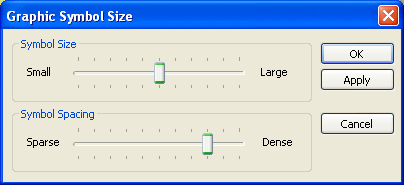
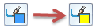

Modify generative design symbol properties
The load and constraint symbol size, spacing, and color options on the command bar apply to the current document only. You can set global defaults for these options using the Generative Design tab in the Solid Edge Options dialog box).
Modify symbol size and spacing
You can change the size and spacing of the load and constraint symbols in the current document using the Graphic Symbol Size dialog box.
-
Select a load or constraint in the Generative Design pane, or click a symbol you want to modify in the graphics window.
-
Click its edit definition handle in the graphics window.
Note:The edit definition handle looks like a 3D annotation, for example, Force 1, Pressure 1, Fixed 1.
-
On the command bar, click the Graphic Symbol Size button .
-
In the Graphic Symbol Size dialog box, do any of the following:
-
Adjust the size of the symbols by moving the Graphics Symbol Size slider.
-
Adjust the density of the symbols by moving the Graphics Symbol Spacing slider.

-
Modify symbol color
You can change the color for the symbols and the value label associated with a selected load or constraint symbol.
-
Select a load or constraint in the Generative Design pane, or click a symbol you want to modify in the graphics window.
-
Click its edit definition handle in the graphics window.
Note:The edit definition handle looks like a 3D annotation, for example, Force 1, Pressure 1, Fixed 1.
-
On the command bar, click the Color button
 .
. -
In the Color dialog box, make changes to the existing color or define a custom color.
The Color button on the command bar updates to show the current color when you close the dialog box.
Example: